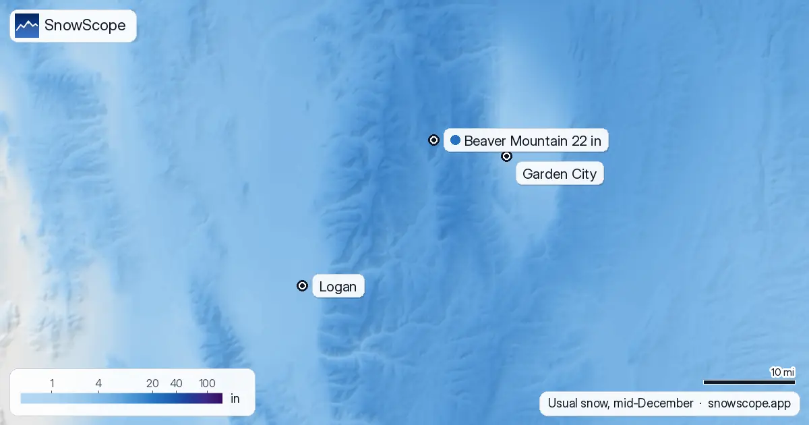
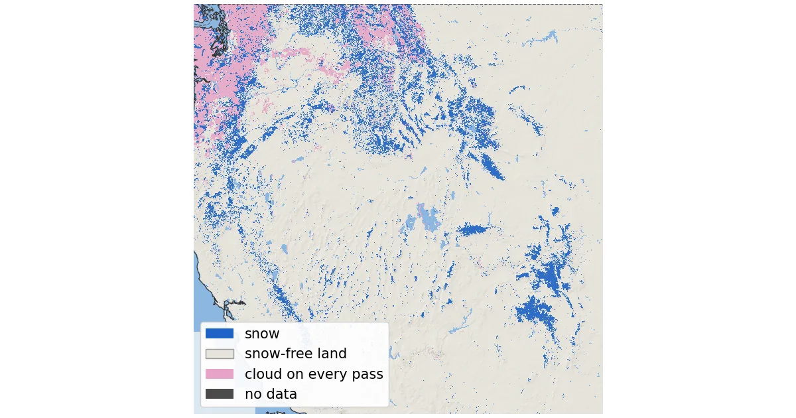

Beaver Mountain in December: Utah's $75 family hill, and when to go
The Beav has a rare thing in Utah skiing: one adult price, $75, with no peak-day surcharge. The catch is the calendar. On our snow history, early December at Beaver Mountain is often thin, and the honest advice is to come in the second half of the month.
See the live snow forecast for Beaver Mountain in the SnowScope appSnow depth, powder alerts and the 3D map, free.A family hill above Logan Canyon
Beaver Mountain sits at the top of Logan Canyon, past the town of Logan and short of Garden City and Bear Lake. On our mapping it has 6 lifts and about 19 mi (31 km) of runs, between roughly 7,160 ft (2,181 m) and 8,760 ft (2,670 m). It is family-run, and it feels like it: one price list, no village.

December week by week
This is where Beaver Mountain needs patience. At mid-mountain, around 7,960 ft (2,425 m), the share of winters with good snow (a weekly mean of 20 in, 50 cm, or more) climbs from 43 % in the first week of December to 54 % in the second, 61 % in the third and 76 % in the week of Christmas.
In dates: a typical 1 December has 16 in (40 cm) at mid-mountain, 15 December 22 in (57 cm) and 25 December 28 in (71 cm). At the base the numbers are lower, 17 in (42 cm) on a typical 15 December, with only 33 % of winters above 20 in on that date. A lean December (one in ten) leaves 10 in (25 cm) at mid-mountain on the 15th: that is groomers only.

The price, and the 10-pack
For 2026-2027 the adult (ages 12-69) all-day lift ticket is $75. There is no peak-day surcharge, which is unusual in a state where dynamic pricing is the rule.
If you live nearby, the 10-pack brings the per-visit cost down: $720 if bought at the Logan office, $740 online. Beaver Mountain is also on the Indy Pass list: the Indy Base Pass is $419 and the Indy+ Pass, with no blackout dates, $469, each with two days at every member area.
Beaver Mountain or Brighton?
Brighton, in Big Cottonwood Canyon, starts its dynamic tickets at $72 for early buyers and has far more December snow on our history: 37 in (94 cm) at mid-mountain on a typical 15 December, with 89 % of winters above 20 in.
So the choice is about timing. For a fixed price you can count on, and a trip after mid-December, the Beav is the relaxed option. For an early-December trip, Brighton's higher base is the safer place to spend $72 or more.
Is it getting worse?
Early season has weakened here. In the first 15 winters of our record, mid-mountain had 26 in (66 cm) on a typical 15 December and 73 % of winters passed 20 in. In the last 15 winters it was 17 in (43 cm) and 33 %. Last winter had 10 in (26 cm) on that date. Plan for late December, and keep an eye on the snow map before you drive up.
Tips for skiers
- Aim for the week before Christmas or later: the odds of good snow rise every December week.
- Locals skiing often should look at the 10-pack or the Indy Pass rather than single tickets.
- Logan Canyon (US-89) is a mountain road: carry chains or use snow tires.
- Early-season runs can hide rocks: stay on groomed trails until the base builds.
References and credits
- Beaver Mountain, tickets and passes 2026-2027 (official) www.skithebeav.com/tickets-and-passes/
- Indy Pass, shop 2026-27 (official) www.indyskipass.com/shop
- Brighton Resort, lift tickets 2026/27 (official) www.brightonresort.com/lift-tickets
- Snow King Mountain, winter day tickets (official store) store.snowkingmountain.com/en/catalogue/category/500-winter-lift-tickets/510-day-ticket_447/
- OpenSkiMap (mapped lifts and runs) openskimap.org/
- avalanche.org, US avalanche centers and forecasts avalanche.org/
About these numbers
Snow numbers: SnowScope snow history, 46 past winters (1980-81 to 2025-26) at the base, mid-mountain and top heights given, a reconstruction of past snow for an area corrected for height (ERA5-Land based; Snow_Hydro 1 km for Morocco), not the ski area's own snow reports. Current snow: the SnowScope snow map. Lifts, runs and heights: OpenSkiMap mapping. Prices: the official pages listed below, read on 13 November 2026; dynamic prices change with the date and with demand.
Official avalanche bulletins: Utah Avalanche Center
Cite this report
For research, teaching or the press: the numbers and charts are free to reuse under CC BY 4.0 with this citation.
SnowScope (2026), Beaver Mountain in December: Utah's $75 family hill, and when to go, https://snowscope.app/blog/en/2026/11/beaver-mountain-utah-december-cheap-skiing.html, accessed 2026-11-15
SnowScope (Atlas Labs). (2026, November 15). Beaver Mountain in December: Utah's $75 family hill, and when to go. SnowScope snow reports. https://snowscope.app/blog/en/2026/11/beaver-mountain-utah-december-cheap-skiing.html
BibTeX
@misc{snowscope2026beavermountainutahdecemb,
author = {{SnowScope (Atlas Labs)}},
title = {Beaver Mountain in December: Utah's $75 family hill, and when to go},
year = {2026},
month = nov,
howpublished = {\url{https://snowscope.app/blog/en/2026/11/beaver-mountain-utah-december-cheap-skiing.html}},
note = {Published 2026-11-15 09:34 UTC; accessed 2026-11-15}
}· CC BY 4.0 · Methods, data and tools →
Beaver Mountain: snow and temperature by height, this winter vs last (tools) →
Follow Beaver Mountain
Free: a message when fresh snow is coming, and the forecast every morning.
More snow reports

MODIS snow cover for the US West, 4 to 13 November 2026: NASA satellites saw snow on 151,099 km² (58,340 sq mi) of ground above 1,500 m (4,900 ft). Snow line range by range, from the Cascades to New Mexico, how the NDSI works, and how the SnowScope map compares.

Where December 2026 looks snowier or leaner from Montana to New Mexico: the European seasonal forecast and our map, mountain by mountain, with Colorado, Utah and the Northern Rockies.